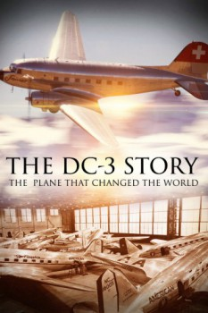

Also known as:Die DC3 Story – Ein Flugzeug, das die Welt verändert hat (original title)
Country:Germany, 53 minutes
Spoken languages:English, German
Genres:Documentary, History
Director(s):Peter Bardehle
Writer(s):
Video Codec:Unknown
Number: 4074

Certification:
Storyline:
There was a time when the DC-3 was the world's most successful aircraft and an indispensable tool: its military version became a crucial factor in achieving peace in various wars and helped many people rise from the ashes during the inevitable humanitarian crises that follow every conflict. But now the Basler factory located in Oshkosh, near Chicago, in the United States, seems to have become a sinister airplane boneyard.
Cast:
Medium: Media file,
Location: D:\War Movies\The DC-3 The Plane That Changed The World.mp4
Loaned: No
Aspect ratio: Unknown